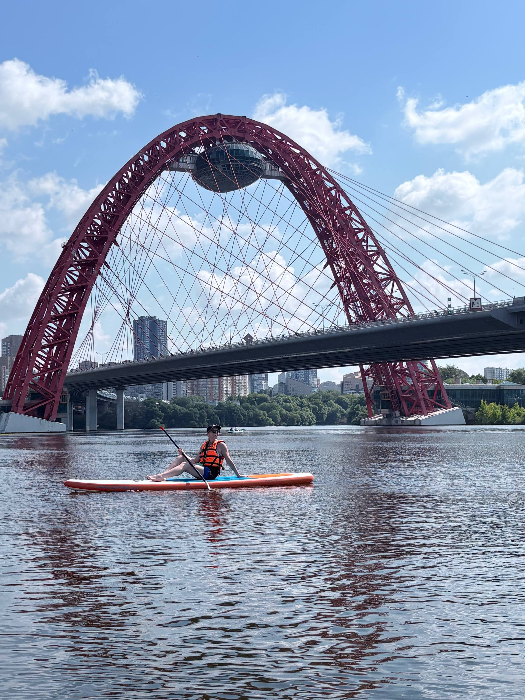
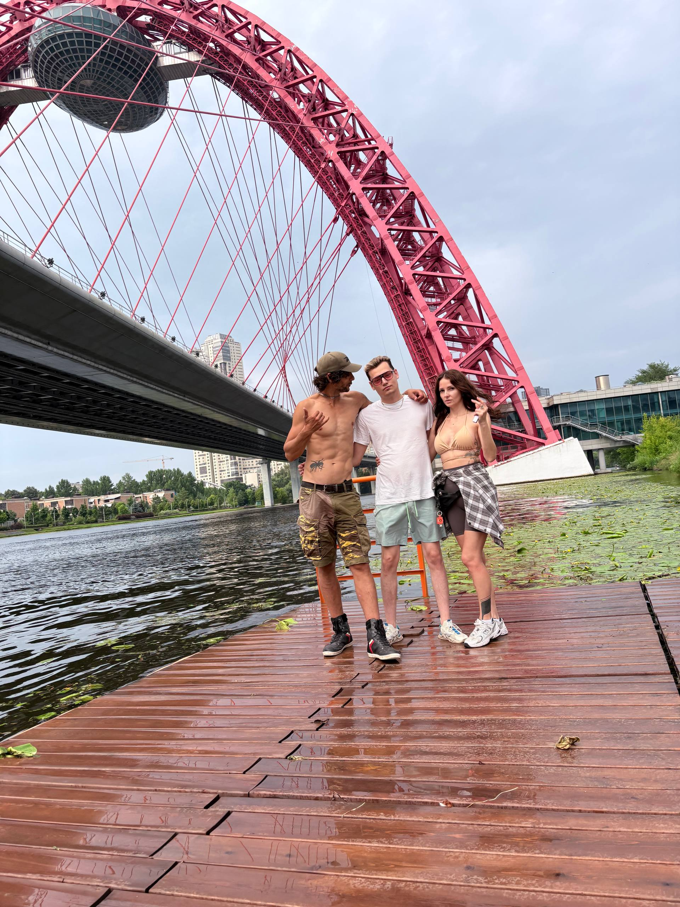
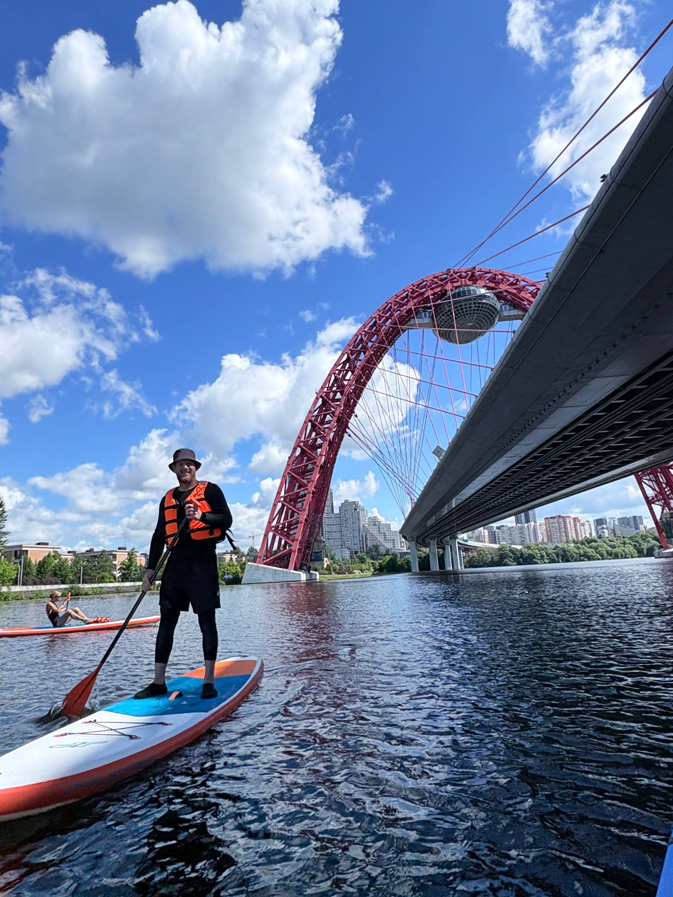
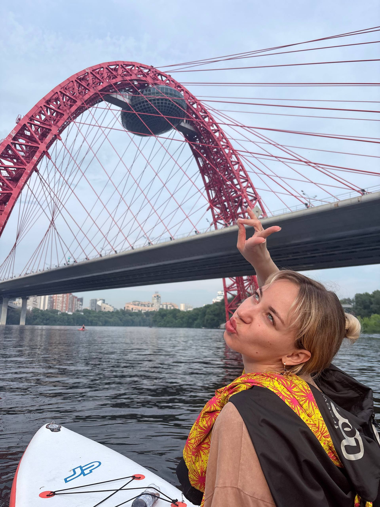

Городской маршрут · День
Живописный мост
Один из самых узнаваемых силуэтов Москвы — вантовая арка над рекой. Маршрут, который хорошо заходит и новичкам, и тем, кто просто хочет красивый вечер на воде.
Забронировать
от 3 500 ₽ / чел
О маршруте
Спокойная вода, сильный вид
Живописный мост виден с воды совсем иначе, чем с берега или из машины — арка нависает над рекой, и байдарка проходит буквально под ней. Течение на маршруте ровное, участок несложный технически, поэтому маршрут хорошо подходит группам смешанного опыта.
По желанию — сопровождающий: поможет с посадкой и логистикой на маршруте. Инструктаж перед стартом обязателен для всех.


Что входит в цену
✓Байдарка, вёсла, спасательный жилет на каждого
✓Инструктаж по технике безопасности
✓Сопровождение технического специалиста на маршруте
✓Гермомешок для телефона и вещей
✓Трансфер снаряжения до места старта
Полностью готовый выход на воду
Галерея
С воды у Живописного моста

Тарифы
Цена зависит от размера группы
| Размер группы | Цена за человека |
|---|---|
| До 5 человек | 4 000 ₽ |
| От 5 человек | 3 500 ₽ |
Хотите тот же мост ночью?